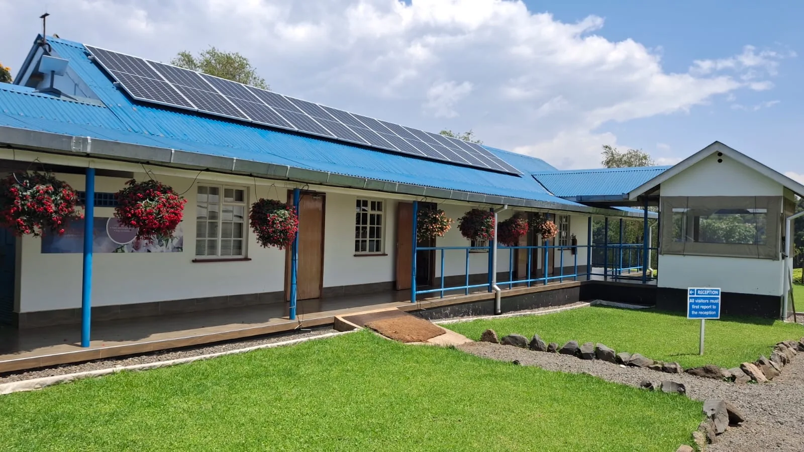
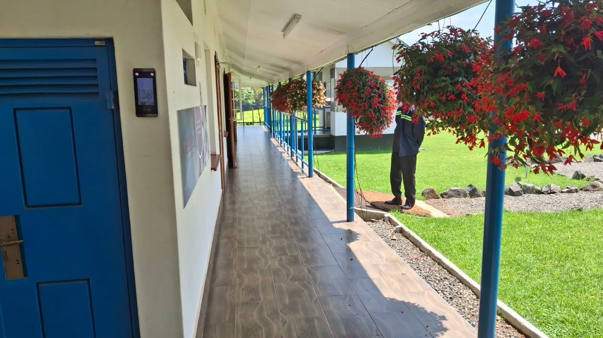
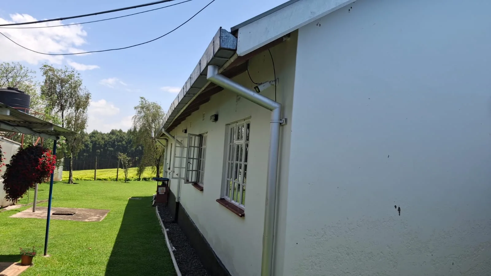
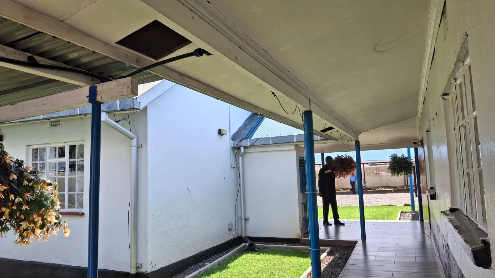
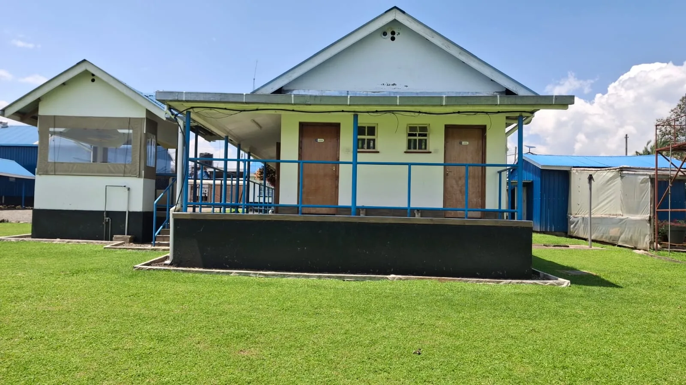
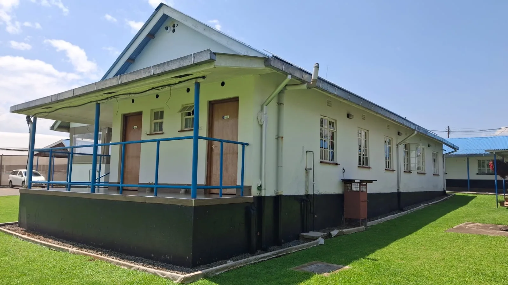
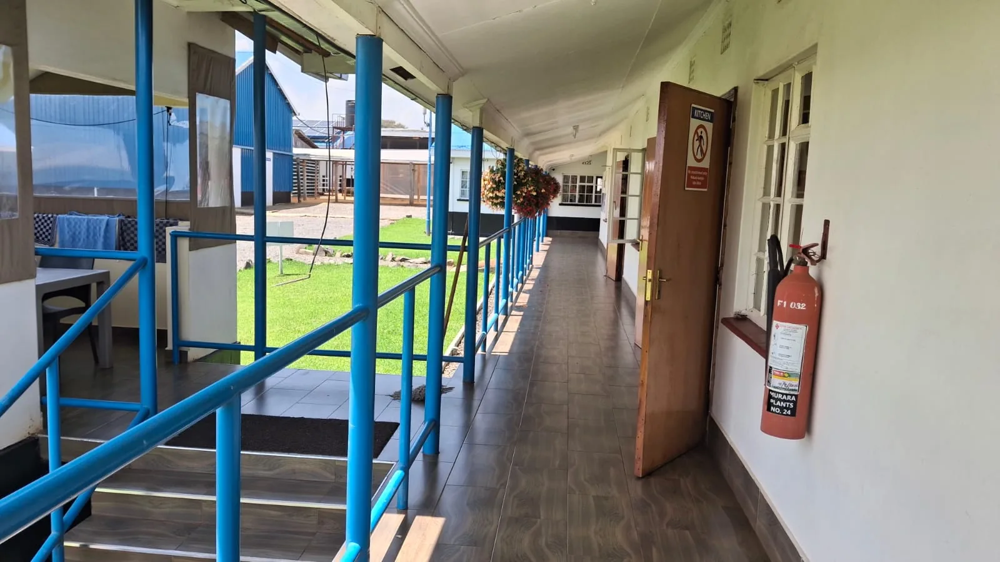

Completed commercial project
Murara Plants — Office Block Extension
Office Extension & Improvement Works
A completed office block extension showcasing exterior building works, covered walkways, finished tiled circulation areas, drainage details and solar integration.






